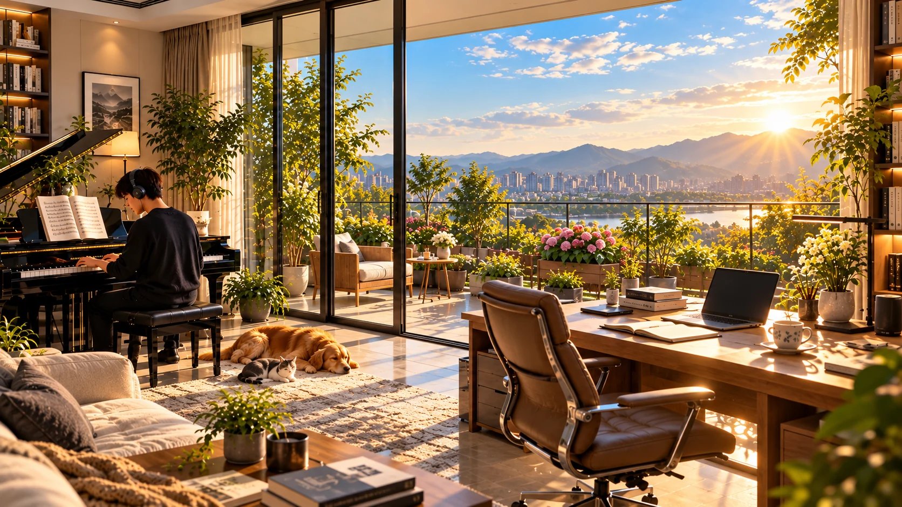
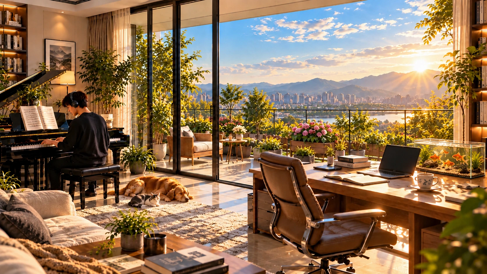

07 / THE LIFE I IMAGINE ✦ A PERSONAL VISION
理想生活.
A QUIETER KIND OF RICHNESS
我向往的，不只是不断向前，
也是有音乐、有书、有阳光与陪伴的日常。
也是有音乐、有书、有阳光与陪伴的日常。


WZ. / MY PRIVATE UNIVERSE
有光，有书，
有属于自己的时间。
点击六个光点探索生活，也可以打开书桌上的金鱼缸。
AN ORDINARY DAY, BY DESIGN. · LIVE SLOWLY, THINK DEEPLY.
08:00 / 清晨的光⇆ 左右滑动场景，点击发光标记探索
00 / 06EXPLORE YOUR MOMENT
点击一个光点，
打开一个生活片段。
这不是一个豪宅愿望清单，而是我对未来生活秩序的想象：自由支配时间，持续学习，拥有热爱，也能享受不被打扰的日常。
MY LITTLE UNIVERSE0 / 6
每探索一处，这间理想中的家就多一个被你了解的角落。
PIANO IN THE BACKGROUND让钢琴声成为这间屋子的背景使用网站内置的三首钢琴曲，点击后开始播放。
THE RHYTHM I WANT
理想的一天，可以这样展开。
不需要每一天都紧凑而高效。有些时候，最值得期待的，就是自由决定这一刻做什么。
A LIVING DETAIL / QUIET WATER
给安静的日常，留一缸流动的光。
五尾金鱼、夕阳与水草。打开鱼缸，投下一点食物，慢慢观察。
“我向往的，不只是成功，继续了解我的生活档案 ↗
而是有能力把平凡的日子，过成自己喜欢的样子。”